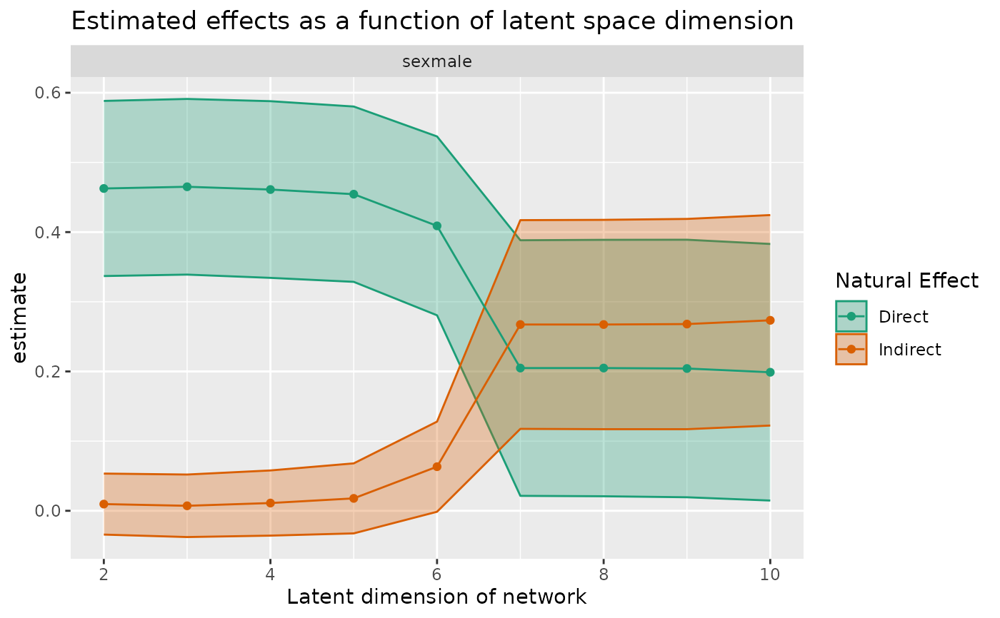

Estimate mediated effects for a variety of embedding dimensions
Source:R/mediation.R
sensitivity_curve_custom.RdEstimate mediated effects for a variety of embedding dimensions
Arguments
- graph
A
tidygraph::tbl_graph()object.- formula
Details about the nodal design matrix. Of the form outcome ~ nodal_formula. For now, no interactiosn or fancy stuff are allowed in the formula.
- max_rank
Maximum rank to consider (integer).
- ranks_to_consider
How many distinct ranks to consider (integer). Optional, defaults to 10.
Value
A rank_sensitivity_curve object, which is a subclass of a
tibble::tibble().
Examples
library(tidygraph)
library(invertiforms)
#>
#> Attaching package: ‘invertiforms’
#> The following object is masked from ‘package:base’:
#>
#> transform
# suppose you want to use the degree-normalized Laplacian embedding
# instead of the adjacency spectral embedding. you can do that as
# follows
data(smoking)
smoking2 <- smoking |>
mutate(
smokes_int = as.integer(smokes) - 1
)
A <- igraph::as_adj(smoking2)
# here we construct our "custom" embeddings
iform <- NormalizedLaplacian(A)
L <- transform(iform, A)
s_max <- RSpectra::svds(L, 10, 10)
X_max <- s_max$u %*% diag(sqrt(s_max$d))
# and now we plug them into the product-of-coefs estimator
curve_custom <- sensitivity_curve_custom(smoking2, smokes_int ~ sex, X_max)
curve_custom
#> # A tibble: 18 × 6
#> term estimand estimate conf.low conf.high rank
#> <chr> <chr> <dbl> <dbl> <dbl> <int>
#> 1 sexmale nde 0.463 0.337 0.588 2
#> 2 sexmale nie 0.00964 -0.0341 0.0534 2
#> 3 sexmale nde 0.465 0.339 0.591 3
#> 4 sexmale nie 0.00718 -0.0377 0.0520 3
#> 5 sexmale nde 0.461 0.334 0.588 4
#> 6 sexmale nie 0.0111 -0.0356 0.0579 4
#> 7 sexmale nde 0.454 0.329 0.580 5
#> 8 sexmale nie 0.0178 -0.0324 0.0681 5
#> 9 sexmale nde 0.409 0.281 0.537 6
#> 10 sexmale nie 0.0633 -0.00139 0.128 6
#> 11 sexmale nde 0.205 0.0214 0.388 7
#> 12 sexmale nie 0.267 0.118 0.417 7
#> 13 sexmale nde 0.205 0.0209 0.389 8
#> 14 sexmale nie 0.267 0.117 0.418 8
#> 15 sexmale nde 0.204 0.0194 0.389 9
#> 16 sexmale nie 0.268 0.117 0.419 9
#> 17 sexmale nde 0.199 0.0147 0.383 10
#> 18 sexmale nie 0.273 0.122 0.424 10
plot(curve_custom)
